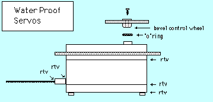

International R/C Warship Combat Club, Inc.
How to Waterproof Servos
by
Marty Hayes
A development by Carl Camurati of Fresh Meadows, N.Y. has been to come up with waterproof servos. The method has been tested in combat by Rick Schultz of Queenstown, Maryland. Now many combatants only put the receiver into the waterproof box. Note: a column in U.S. Boat and Ship Modeler by Steve Milholland {In Harms Way, Winter 95} covers waterproofing the receiver as well as the servos.
The original method to waterproof the servo, was to cover all seams, screws, and the plug and wires with silicone sealant (RTV), and seal the top opening with an "O" ring by cutting a bevel in the bottom of the control wheel you are going to mount on top. That's all there was to it. Improvements over the years have added new materials but the method is still the same. I now use plastic tape (available at most hardware stores) to seal the seams and bottom of the servo before covering with silicone or with a newer product "Dip-it" (also found at hardware stores). "Dip-it" is some sort of liquid plastic which is commonly used for dipping the handles of tools to form comfortable grips on them. "Dip-it comes in at least three different colors and in both spray and liquid form. This is easier to remove for maintance when the covering has failed due to combat or handling damage.
I'm sure that Carl has done some testing on the original method but I know John French of Annapolis, Md. has submerged a servo, water proofed as above, in water for an hour without an problems. At the 1989 nationals, Rick's Andrea Doria sank in the last battle and Rick poured the water out and drove it to the docking area, only the receiver was in a waterproof box, the servos were waterproofed by the above method. If you wish, you could use this as a backup method to protect your servos while still mounting in a waterproof box.
Someday perhaps the servo manufacturers will come up with a similar method - perhaps with built in "O" rings - but for now in most cases don't trust their "waterproof" servos, they really mean splash resistant.
